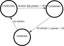

Finite State Machines
Overview
- A practical guide to Finite State Machines, as they pertain to ROS nodes
- A finite-state machine (fsm) is a computational model consisting of states and the transitions between them
- In each state, the model performs an action (such as sending a control signal to a motor)
- Each state can transition to a new state where it will perform a new action
- In ROS, transitions can be triggered by events such as
- Receiving a message
- Time elapsing
- User Input
- Sensor input
- Ideally, ROS nodes should not be affected by startup order or what other nodes are running. Instead they should publish whatever they are going to publish and react appropriately to received messages
- An FSM can help accomplish the above: callbacks can be seen as driving a state machine allowing the node to, for example
- Continuously publish something on a timer
- Change what is being published when new sensor data arrives
- Stop publishing on command
- Publish a different type of message depending on the mode
- When using python, the smach library can be used to implement state machines
Robot Vacuum Cleaner Example
- A robot vacuum cleaner must clean a room and return to its base station when in need of a charge
- Some potential states for a robot vacuum cleaner are
- CHARGING (robot is at its docking station)
- CLEANING (robot is navigating throughout the room actively cleaning)
- HOMING (robot is returning home to charging station)
- Some Events:
- Button Press leads to transition from CHARGING to CLEANING if power_level > 50%
- CLEANING transitions to HOMING when done or power_level < 25%
- HOMING - When done cleaning and heading to the charging station, switches to charging at charging station
